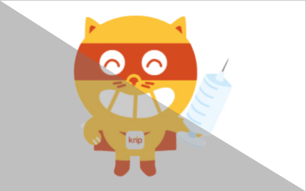
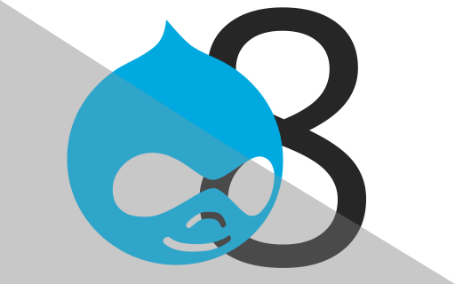
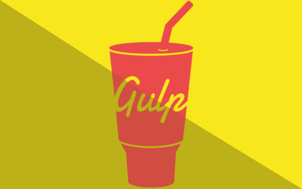
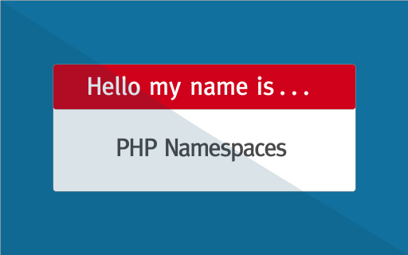
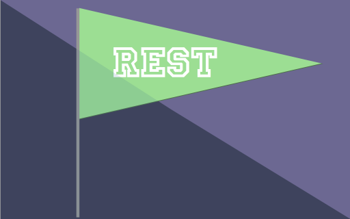
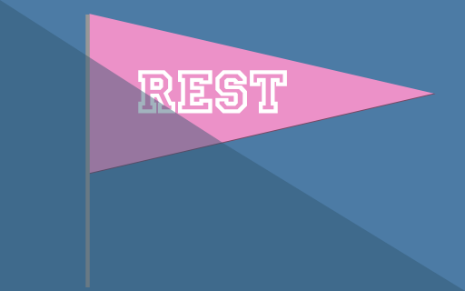
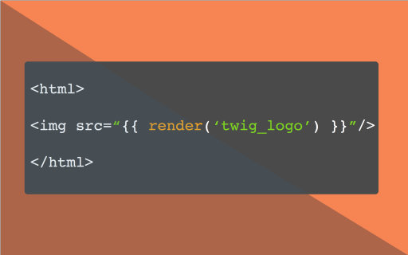

Education
Pennsylvania College of Technology
Bachelors of Science in Web and Interactive Media
a computer science degree that focuses on user experience and web application development







